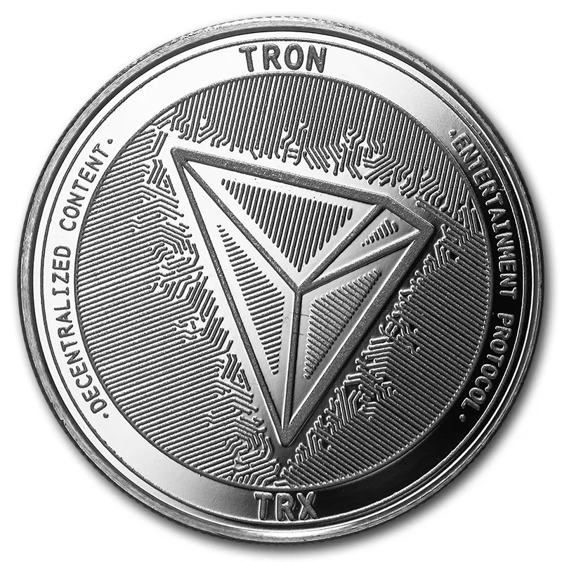

Навигация:
Сегодня сложно представить человека, не знакомого с термином «криптовалюта». Из-за событий, связанных с коллапсом одной из крупнейших централизованных бирж FTX, в сети, на центральном телевидении, а также в известных СМИ возникло активное обсуждение индустрии цифровых активов. Последние выпускали статьи с кричащими заголовками, например, «Крах криптовалют» издания The Economist. Если у тебя есть интерес к данной теме, предлагаем ознакомиться с историей первой криптовалюты и монетами, появившимися после нее.
Чем примечателен год создания криптовалюты
История развития криптовалют связана с появлением биткоина в 2008 году. Однако цифровые активы существовали на протяжении нескольких десятилетий и до появления BTC. История термина «криптовалюта» берет свое начало в 1989 году, когда американскому ученому-компьютерщику Дэвиду Ли Чауму пришла идея заняться разработкой цифровых денег. Он впервые предложил использовать криптографию для защиты и подтверждения транзакций.
Только спустя несколько лет, на заре 1990-х годов, начали успешно разрабатывать криптографические методы и программное обеспечение. Это стало ключом к развитию децентрализации. В 1998 году компьютерный инженер Вэй Дай опубликовал работу, в которой представил «b-money». Он также описал принцип действия анонимной распределенной системы электронных денег.
Многие до сих пор уверены, что первая в мире криптовалюта называлась Bit Gold. Такая валюта действительно существовала и возникла в то же время, что и «b-money». Ее создатель – блокчейн-пионер Ник Сабо. Bit Gold вдохновлялась неэффективностью старой банковской системы и необходимостью снизить уровень доверия, требуемый для совершения транзакций.
Ни одна из этих криптовалют так и не стала официальной. Но важным остается то, что они стали частью истории цифрового мира и вдохновили на создание современных монет, которые сегодня представлены на рынке и доступны для майнинга на компьютерах и других более производительных устройствах.

Почему появились криптовалюты
Основная цель цифровых активов – децентрализация финансов. Давайте рассмотрим плюсы и минусы криптовалют.
Преимущества цифровых монет:
- Сторонники считают криптовалюты, такие как биткоин, монетами будущего и стремятся осуществить их покупку сейчас, до того, как они станут более ценными, и их можно будет использовать повсеместно, например, для оплаты товара.
- Криптовалюта — сильный игрок в мире денежных активов и один из главных конкурентов центральных банков. Минус финансовых учреждений в том, что со временем им приходится снижать стоимость фиата через инфляцию.
- Участники некоторых сообществ рассматривают криптовалюты как перспективный плацдарм для построения финансовой системы будущего. Данные Pew Research Center за 2021 год показали, что азиаты, афроамериканцы и латиноамериканцы «чаще, чем европейцы, говорят, что когда-либо инвестировали, торговали или использовали криптовалюту».
- Другим пользователям нравится блокчейн-технологии, лежащие в основе криптовалют, поскольку она представляет собой децентрализованную систему обработки и учета данных и может быть более безопасной платформой, чем традиционные платежные системы оплаты при помощи банковских карт.
- Некоторые криптовалюты предоставляют своим владельцам возможность создавать пассивный доход с помощью процесса под названием стейкинг.
Недостатки криптовалют:
- Многие криптовалютные проекты не проверены, а блокчейн-технологии еще не получили широкого распространения. Если идея, лежащая в основе цифровых активов, дальше не реализует свой потенциал, долгосрочные инвесторы могут так и не увидеть тех доходов на своем счету, на которые они рассчитывали, и в итоге перестанут покупать цифровые монеты.
- Для краткосрочных криптоинвесторов существуют и другие риски. Цены на виртуальные валюты имеют тенденцию быстро меняться. Это означает, что пользователи могут даже за день как быстро заработать деньги, купив активы в нужное время, так и потерять большое количество средств, сделав это непосредственно перед обвалом крипторынка.
- Биткоин и другие проекты на алгоритме Proof-Of-Work (PoW) оказывают значительное влияние на окружающую среду. Например, исследование, проведенное Кембриджским университетом, показало, что BTC-майнинг потребляет в два раза больше электроэнергии, чем все жилое освещение в США. При этом некоторые криптовалюты используют другую технологию с меньшим энергопотреблением, которая называется Proof-Of-Stake.
- Правительства по всему миру еще не до конца определились с тем, как относиться к криптовалютам, поэтому не стремятся принимать законы, накладывающие ограничения на использование криптовалют. Однако изменения в нормативно-правовой базе могут повлиять на рынок непредсказуемым образом.